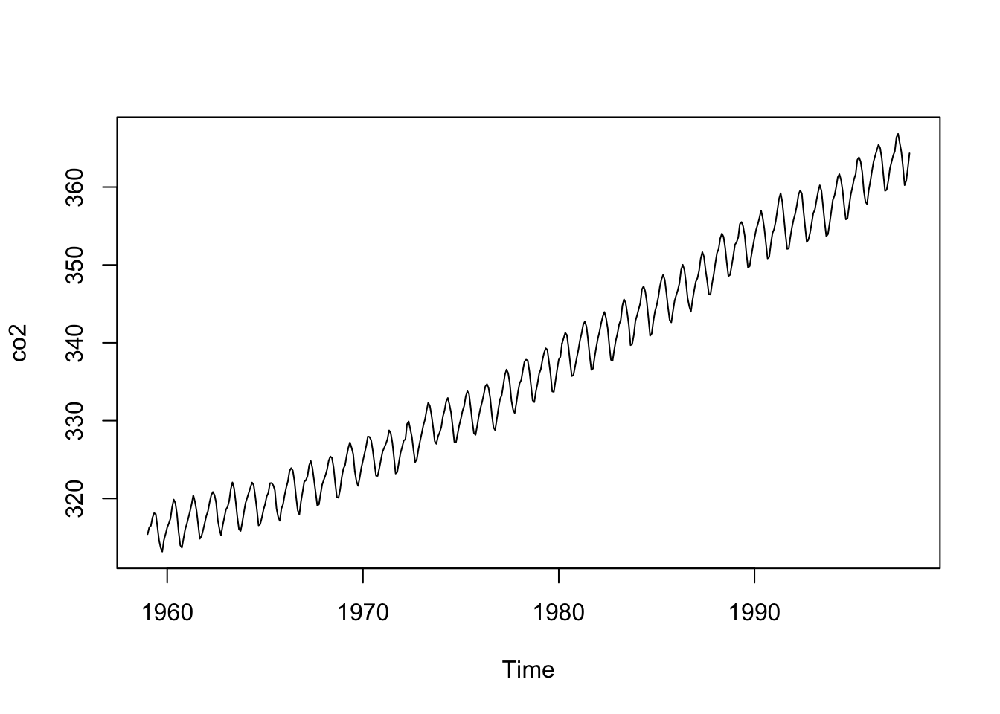
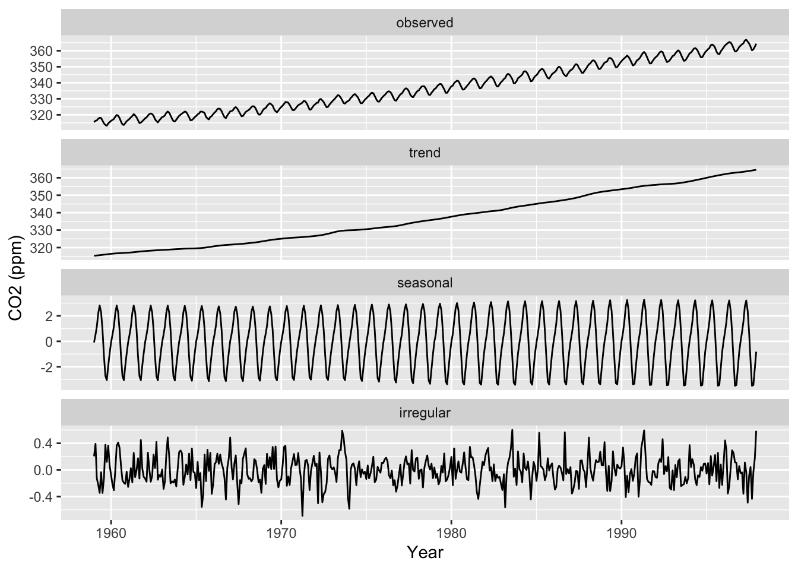

A time series measures a single variable over many points in time. Time intervals may be regularly or irregularly spaced, but we’ll only consider regularly-spaced data today. We’ll focus on visualizing a single variable over time, since there are already so many choices and information to work with.
For this demo, we’re going to work with a dataset that’s actually already loaded when you start R: it’s defined under co2, and known as the “Mauna Loa Atmospheric CO2 Concentration” dataset. This dataset contains 468 monthly measurements of CO2 concentration from 1959 to 1997.
When you start R, if you type in co2, this is what you’ll see:
These numbers are expressed in parts per million (ppm) - if you’ve taken a chemistry class (which I haven’t), I assure you know more about this than I do, but ppm is a very common measure for pollutants and contaminants.
The co2 object is actually defined with a class we haven’t seen yet, ts (time series):
class(co2)
[1] "ts"
As a result, it contains extra attributes about the times associated with each value, and base R graphs can plot this automatically (we don’t need to specify the time range manually):
plot(co2)

This is typically called a line plot. Here’s how you would plot the same data in the gg style (note that you need the package ggfortify to do this) without constructing the typical long-table format we’re used to:
library(ggfortify)
Warning: package 'ggfortify' was built under R version 4.2.3
Loading required package: ggplot2
Warning: package 'ggplot2' was built under R version 4.2.3
autoplot(co2)
In time series, we are interested in checking for trends (does the variable tend to increase or decrease over time?), seasonality (are there tendencies that regularly occur? If so, at what intervals do they occur?), general variability (i.e., variation beyond average trends and seasonality), and outliers (unusual spikes or valleys). Which of these do we see in the co2 data?
In order to show you more general-purpose plotting methods, we’ll treat co2 as numeric instead of ts from now on. This is actually the form that many time series data take (they’re usually not in the ts format), so this will also show you some of the formatting/structuring issues you’ll have to work with in the wild.
In the code below, we create a dataset with 1:468 as the obs_i variable (x-axis variable) and the CO2 concentration as the co2_val variable (y-axis) variable). Then, we use our usual ggplot to plot the data:
library(tidyverse)co2_tbl <-tibble(co2_val =as.numeric(co2)) |>mutate(obs_i =1:n())co2_tbl |>ggplot(aes(x = obs_i, y = co2_val)) +geom_line() +labs(x ="Time index", y ="CO2 (ppm)")
Note the x-axis: This will not be helpful/informative to readers. It’s a common mistake for people to just put something like “index” on the x-axis, but they don’t even tell you what they are indexing. Be sure to not make this mistake! To properly structure time series data and label it correctly, you’ll need to know how to work with Date type objects in R (which we will discuss next…).
Formatting Date data in R
The following code redefines creates a new column in our dataset to be the monthly dates 1/1/1959, 2/1/1959, … , 12/1/1997 using the as.Date() function (given the description of the time range in help(co2)):
co2_tbl <- co2_tbl |># We can use the seq() function with dates which is pretty useful!mutate(obs_date =seq(as.Date("1959/1/1"), by ="month",length.out =n()))co2_tbl |>ggplot(aes(x = obs_date, y = co2_val)) +geom_line() +labs(x ="Year", y ="CO2 (ppm)")
Unfortunately, the default format for dates in as.Date() is Year/Month/Day. If you prefer another format, such as the common Month/Day/Year (as I used above in the previous paragraph), you need to include the format argument within as.Date(), as such (note that the Y is capitalized - yes, as.Date() is that picky):
co2_tbl <- co2_tbl |>mutate(obs_date =seq(as.Date("1/1/1959", format ="%m/%d/%Y"), by ="month",length.out =n()))co2_tbl |>ggplot(aes(x = obs_date, y = co2_val)) +geom_line() +labs(x ="Year", y ="CO2 (ppm)")
Note that all we needed to do was convert the obs_date variable to a Date class, and then we could use ggplot as is. This is because ggplot knows to use a special date scale for the x-axis when x has class Date. As a result, we can easily play with the breaks on the date axis using scale_x_date(). For example:
For a subset of the data, maybe we only want ticks every 4 months, using date_breaks.
We can specify the format of the date with date_labels. (See Details section of ?strftime for the formatting options. Here, we choose abbreviated month %b and full year %Y.)
co2_tbl[1:26,] |>ggplot(aes(x = obs_date, y = co2_val)) +geom_line() +scale_x_date(date_breaks ="4 months", date_labels ="%b %Y") +labs(x ="Year", y ="CO2 (ppm)") +# Modify the x-axis text theme(axis.text.x =element_text(angle =45, hjust =1))
Moving window averages
One of the things we look for in time series data are trends. But measurements can be quite noisy, making it hard to see the underlying trend. For example: Most investors probably shouldn’t react by selling or buying every time the stock market jumps up or down a little bit, but it might make sense to respond to a longer-term underlying trend.
As we discussed in lecture, moving averages are a great way to get an idea of underlying trends. The ggseas package has a function called stat_rollapplyr() for computing moving averages. Below is an example of computing (and displaying) a moving average using this function:
library(ggseas)co2_tbl |>ggplot(aes(x = obs_date, y = co2_val)) +geom_line(color="red") +stat_rollapplyr(width =12, align ="right") +labs(x ="Year", y ="CO2 (ppm)", title ="Width = 12")
Warning: Removed 11 rows containing missing values or values outside the scale range
(`geom_line()`).
Let’s look at the stat_rollapplyr() line more closely. Setting width = 12 and align = "right" states, “For each point, plot the average of that point and the 11 points behind it.” Since this is monthly data, this is the average of a year’s worth of data. Given this, think about why there is no trend line for the first 11 points on the left-hand side of the graph.
To get a better idea of what happens when we change the width argument, below is an example of setting width = 2 and width = 24.
# The patchwork package provides a convenient way to arrange plotslibrary(patchwork)
Warning: package 'patchwork' was built under R version 4.2.3
wid2 <- co2_tbl |>ggplot(aes(x = obs_date, y = co2_val)) +geom_line(color="red") +stat_rollapplyr(width =2, align ="right") +labs(x ="Year", y ="CO2 (ppm)", title ="Width = 2")wid24 <- co2_tbl |>ggplot(aes(x = obs_date, y = co2_val)) +geom_line(color="red") +stat_rollapplyr(width =24, align ="right") +labs(x ="Year", y ="CO2 (ppm)", title ="Width = 24")wid2 + wid24
Warning: Removed 1 row containing missing values or values outside the scale range
(`geom_line()`).
Warning: Removed 23 rows containing missing values or values outside the scale range
(`geom_line()`).
Setting width to be smaller gives us a line that fits the data much better, but it’s also much less smooth. (In fact, setting width = 1 is literally the data itself.) Meanwhile, setting width to be larger gives us a much smoother fit, but it doesn’t fit the data as precisely. Ultimately, choosing how much smoothness you want for your visual is very much an art: You want the trend to be smooth enough that you get an idea of the overall trend, but you also don’t want to deviate from your data too much. Some choices are better than others: For example, below is a trend line whose width is obviously too large (obviously because the trend line doesn’t fit the data well at all).
co2_tbl |>ggplot(aes(x = obs_date, y = co2_val)) +geom_line(color="red") +stat_rollapplyr(width =100, align ="right") +labs(x ="Year", y ="CO2 (ppm)", title ="Width = 100")
Warning: Removed 99 rows containing missing values or values outside the scale range
(`geom_line()`).
One last thing to note is that moving averages are extremely similar to loess smoothing. Moving averages compute the average outcome within a sliding window; meanwhile, loess computes a weighted linear regression within a sliding window. Indeed, loess can be used for understand the overall trend of a time series as well:
moving_ave_plot <- co2_tbl |>ggplot(aes(x = obs_date, y = co2_val)) +geom_line(color ="red") +stat_rollapplyr(width =12, align ="right") +labs(x ="Year", y ="CO2 (ppm)", title ="Width = 12")loess_plot <- co2_tbl |>ggplot(aes(x = obs_date, y = co2_val)) +geom_line(color ="red") +geom_smooth(method ="loess") +labs(x ="Year", y ="CO2 (ppm)", title ="Loess")moving_ave_plot + loess_plot
Warning: Removed 11 rows containing missing values or values outside the scale range
(`geom_line()`).
`geom_smooth()` using formula = 'y ~ x'
Moving averages actually literally are loess, but with the formula y ~ 1 instead of y ~ x (i.e., an intercept-only model), and using a rectangular kernel (which is the NOT the default in loess() in R).
Adding lines and rectangles to a time series
If a specific event in time has a notable effect on your time series data, it is common to mark that event with a vertical line, or with rectangular shading if that event occurs over a period of time. For example, it’s common for financial data to denote recessions with gray rectangular shading (this is often called “recession shading”), because economic recessions have notable impacts on financial data.
To add a vertical line to your time series, you just use geom_vline(). For example, here is a plot of the co2_tbl data with a vertical line for the beginning of 1980:
co2_tbl |>ggplot(aes(x = obs_date, y = co2_val)) +geom_line(color ="red") +stat_rollapplyr(width =12, align ="right") +geom_vline(aes(xintercept =as.Date("1980-01-01"))) +labs(x ="Year", y ="CO2 (ppm)", title ="CO2 Emissions Over Time")
Warning: Removed 11 rows containing missing values or values outside the scale range
(`geom_line()`).
Note that the xintercept has to have a very particular format: It has to be a date that has the same dating format as your data. For example, here is the exact same code, but with the more common Month-Day-Year format for the date; the line will not display (presumably because it thinks I’m trying to add a vertical line for Year 1):
co2_tbl |>ggplot(aes(x = obs_date, y = co2_val)) +geom_line(color ="red") +stat_rollapplyr(width =12, align ="right") +geom_vline(aes(xintercept =as.Date("01-01-1980"))) +labs(x ="Year", y ="CO2 (ppm)", title ="CO2 Emissions Over Time")
Warning: Removed 11 rows containing missing values or values outside the scale range
(`geom_line()`).
Furthermore, note that you cannot just put an integer (e.g., the year) into geom_vline() when plotting a time series in this way. For example, here is what happens when I try to just input the number 1980 (thinking I’ll draw a line at the year 1980):
co2_tbl |>ggplot(aes(x = obs_date, y = co2_val)) +geom_line(color ="red") +stat_rollapplyr(width =12, align ="right") +geom_vline(aes(xintercept =1980)) +labs(x ="Year", y ="CO2 (ppm)", title ="CO2 Emissions Over Time")
Warning: Removed 11 rows containing missing values or values outside the scale range
(`geom_line()`).
Meanwhile, to add rectangular shading to a time series plot, you use geom_rect(), which we haven’t seen before. However, it’s very intuitive: Within aes(), you just need to specify an xmin, xmax, ymin, and ymax. For example, below is our time series with gray shading between 1980 and 1990:
co2_tbl |>ggplot(aes(x = obs_date, y = co2_val)) +geom_rect(aes(xmin =as.Date("1980-01-01"), xmax =as.Date("1989-12-31"),ymin =-Inf, ymax =Inf),fill ="grey", alpha =0.5) +geom_line(color ="red") +stat_rollapplyr(width =12, align ="right") +geom_vline(aes(xintercept =as.Date("01-01-1980"))) +labs(x ="Year", y ="CO2 (ppm)", title ="CO2 Emissions Over Time")
Warning: Removed 11 rows containing missing values or values outside the scale range
(`geom_line()`).
There are just a few important things to keep in mind when using rectangular shading on time series:
Similar to adding a vertical line, you need to make sure that your xmin and xmax are dates, written in the same dating format that’s used in your data.
For time series plots, you typically want the rectangular shading to span the entire y-axis (i.e., from the bottom to the top of the plot). So, you typically set ymin = -Inf and ymax = Inf (as above). Note that you need to specify xmin, xmax, ymin, andymax within geom_rect(); otherwise you will get an error.
Be sure to use geom_rect() before you draw any lines on your plot. For example, I put geom_rect() before stat_rollapplyr() above. Otherwise, the rectangle will cover the line of your plot:
co2_tbl |>ggplot(aes(x = obs_date, y = co2_val)) +geom_line(color ="red") +stat_rollapplyr(width =12, align ="right") +geom_rect(aes(xmin =as.Date("1980-01-01"), xmax =as.Date("1989-12-31"),ymin =-Inf, ymax =Inf),fill ="grey", alpha =0.5) +geom_vline(aes(xintercept =as.Date("01-01-1980"))) +labs(x ="Year", y ="CO2 (ppm)", title ="CO2 Emissions Over Time")
Warning: Removed 11 rows containing missing values or values outside the scale range
(`geom_line()`).
Lags and autocorrelation functions
Now we will walk through how to compute autocorrelations using lags.
Imagine computing the autocorrelation at each lag (1, 2, 3, …). For example, the autocorrelation at lag 1 is the correlation between the time series itself and the time series shifted back one timepoint. Computing the autocorrelation at each lag will thus give us a vector of autocorrelations, commonly called the autocorrelation function (ACF).
You can think of the ACF as taking in a lag \(\ell\) and spitting out a correlation between -1 and 1. The higher the correlation, the more dependent the time series measurements are on each other; and the larger the \(\ell\) with high correlation, the more this dependence “lasts” over time.
Base R has the acf() function which can be used to compute and plot the ACF for a large number of lags.
By default, these plots display 95% confidence intervals, where autocorrelations outside this confidence interval are deemed “unusually large.” These intervals will depend on the data itself (for example, in another application, the intervals may not be \(\pm 0.1\)), and the way these intervals are computed is outside the scope of this class (but it is easily googled for those interested; see the end of this document for example).
Because the autocorrelations are way above the confidence interval, we would say that this visual clearly shows that the co2 data is highly autocorrelated, due to the strong global trend. What if we remove the trend, then look at the ACF of the residuals? We can compute moving averages using rollapply (in the zoo package, loaded when you load ggseas).
# Use rollapply to compute a Moving Average, then compute residuals (co2_val - mov_ave)co2_tbl <- co2_tbl |>mutate(mov_ave = zoo::rollapply(co2_val, width =12, FUN ="mean", align ="right", fill =NA),res = co2_val - mov_ave)# Just to understand what this is doing, let's look# at the first few rows of the data:co2_tbl[1:13,]
# A tibble: 13 × 5
co2_val obs_i obs_date mov_ave res
<dbl> <int> <date> <dbl> <dbl>
1 315. 1 1959-01-01 NA NA
2 316. 2 1959-02-01 NA NA
3 316. 3 1959-03-01 NA NA
4 318. 4 1959-04-01 NA NA
5 318. 5 1959-05-01 NA NA
6 318 6 1959-06-01 NA NA
7 316. 7 1959-07-01 NA NA
8 315. 8 1959-08-01 NA NA
9 314. 9 1959-09-01 NA NA
10 313. 10 1959-10-01 NA NA
11 315. 11 1959-11-01 NA NA
12 315. 12 1959-12-01 316. -0.396
13 316. 13 1960-01-01 316. 0.373
Just to show that this is indeed the moving average:
co2_tbl |>ggplot(aes(x = obs_date)) +geom_line(aes(y = mov_ave)) +geom_line(aes(y = co2_val), color ="red") +labs(x ="Year", y ="CO2 (ppm)")
Warning: Removed 11 rows containing missing values or values outside the scale range
(`geom_line()`).
Now let’s look at a plot of the residuals (i.e., the observed outcomes minus the moving average), as well as an autocorrelation plot of the residuals:
# Plot the residualsco2_tbl |>ggplot(aes(x = obs_date, y = res)) +geom_line() +labs(x ="Year", y ="Residuals of CO2 (ppm)")
Warning: Removed 11 rows containing missing values or values outside the scale range
(`geom_line()`).
# Compute ACF of the residuals# (except the first 11 cases, which are NA)autoplot(acf(tail(co2_tbl$res, -11), plot =FALSE))
Now what pattern do we see in the ACF plot? Which lags have the most positive and most negative values? What does this mean for monthly data?
See this link for tips on mimicking the acf() plot in ggplot. For example, you can save the output of acf() and then put it inside a data frame:
co2_acf <-acf(tail(co2_tbl$res, -11))
co2_acf_df <-with(co2_acf, data.frame(lag, acf))# the resulting data.frame looks like this:head(co2_acf_df)
# Then, we can make a simple "bar" plot:# (bar is in quotes because it's not displaying a categorical variable)ggplot(co2_acf_df, aes(x = lag, y = acf)) +geom_bar(stat ="identity")
# Alternatively, you could use:# ggplot(co2_acf_df, aes(x = lag, y = acf)) + geom_col()# which does the same thing.
Seasonal decomposition
Recall that, in lecture, we mentioned that there are three main characteristics of time series:
Trends: The average increase or decrease in a variable over time.
Seasonality: Changes in the variable that regularly happen (e.g., every winter, every hour, etc.)
Noise: Variation in the variable beyond average trends and seasonality.
The idea above shows us that we can remove global trends from the dataset and then look for seasonal trends. The base R function stl() does this explicitly using loess smoothers:
“Seasonal decomposition of Time series by Loess”. It actually also separates the seasonal trend from the irregular / residual noise.
In ggseas, we can mimic this by using ggsdc() instead of starting with the ggplot() function. (The argument s.window is a kind of loess smoother span for the seasonal extraction.)
co2_tbl |>ggsdc(aes(obs_date, co2_val), frequency =12, method ="stl", s.window =12) +geom_line() +labs(x ="Year", y ="CO2 (ppm)")

The sum of “trend” + “seasonal” + “irregular” gives us back the original data, shown in “observed” (the top facet).
Does it look like stl found all interesting global or periodic trends, or is there any signal left in the “irregular” component?
Here is the intuition for how the stl() function works:
The “trend” component is obtained by fitting a loess curve to the time series. The smoothness of this loess is controlled by frequency.
The “seasonal” component is obtained by fitting another loess curve on the residuals (observed - trend). The smoothness of this loess is controlled by s.window.
The “irregular” component is obtained as the remaining residuals (observed - trend - seasonal).
This is technically not 100% correct, but it’s very, very close to what actually happens within the stl() function; see help(stl) for details.